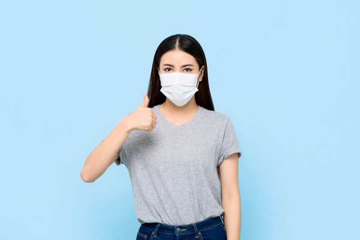
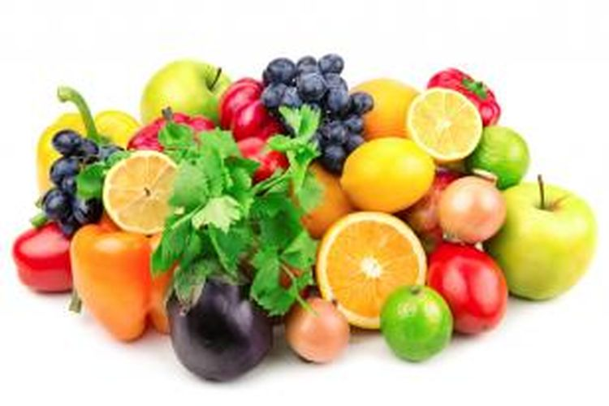

1. Menjaga Jarak
Menjaga jarak fisik. Disarankan untuk menjaga jarak setidaknya 1 meter dari orang
lain.Sebab jarak yang terlalu dekat memungkinkan Anda menghirup tetesan air dari hidung atau mulut
orang
yang mungkin terinfeksi Covid-19 ketika ia bersin atau batuk. Imbauan tersebut juga telah
disampaikan oleh pemerintah Indonesia.
2. Pakai Masker Ketika Keluar Rumah

Guna mencegah penyebaran virus Covid-19, Pemerintah telah mengeluarkan kebijakan
Physical Distancing
serta kebijakan bekerja, belajar, dan beribadah dari rumah.Namun, bagi kalian yang harus banget
beraktivitas di luar rumah jangan lupa selalu pakai masker ya. Pemerintah mewajibkan seluruh
masyarakat Indonesia untuk mengenakan masker saat beraktivitas di luar rumah .Tujuan ini dilakukan
untuk mengurangi penyebaran virus itu sendiri.
3. Jaga Kesehatan Dengan Buah-buahan

Menjaga imunitas tubuh menjadi cara ampuh mencegah penyebaran virus Corona. Tidak
terlalu sulit,
kalian
hanya cukup mengonsumsi banyak sayuran dan buah-buahan.Terlebih, pada sayur dan buah-buahan yang
memang
mampu meningkatkan imun tubuh.Masyarakat dianjurkan untuk banyak makan sayur, buah dan makanan
berprotein seperti ikan, telur dan daging tanpa lemak.